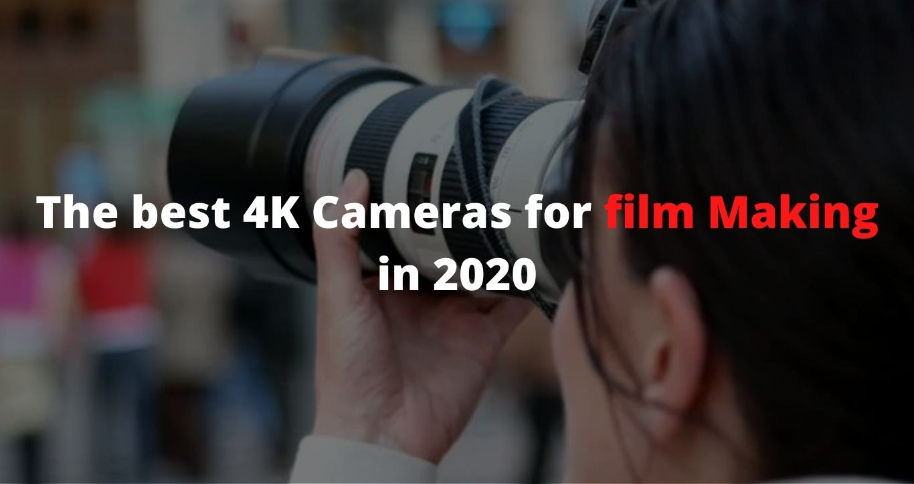

Admin
September 10, 2020
2 Commets
The best 4K cameras for film making in 2020
Picking the best 4K camera for filmmaking implies being clear about the sort of video you need to shoot. This is an extremely wide field with a wide range of kinds of client.
This is the reason we've part our guide into three areas, for three unique kinds of client:
• 4K cameras for photographers: Many stills picture takers have now moved into video, and may frequently require similar framework for the two sorts of work. We've picked cameras that are acceptable at both.
• 4K cameras for vloggers: Vloggers and autonomous substance makers presently make up an exceptionally noteworthy aspect of the market. We have a different manual for the best cameras for vlogging, yet we've incorporated a few models here.
• 4K cine cameras: These are cameras focused on proficient movie producers and, once more, we do have a different manual for the best film cameras, however we've incorporated two or three fascinating cameras for this gathering.
RELATED ARTICLES
• Best video tripods
• Best gimbal stabilizers
• Best mouthpieces
• Best sound recorders
• Best video lights
• Best camera sliders
• Best outer screens
• How to alter recordings: video altering tips
The best camera phones already shoot 4K, obviously, as do a considerable lot of the best simple to use cameras. However, these are fixed focal point gadgets with little sensors, which restricts their adaptability and execution. There are numerous subtleties to catching incredible quality video past basic goal, and this requires highlights and controls you will just jump on cameras intended for genuine 4K filmmaking.
Furthermore, this is the place the video market is seeing probably the greatest changes. Mirrorless cameras are beginning to mount a genuine test to professional cinema cameras, driven by the powerful Panasonic Lumix S1H, and the more courageous camera creators are trying different things with new sorts of catch gadget – we are, obviously, discussing the small and rather likeable Sigma fp.
The huge news, nonetheless, is the Canon EOS R5, a 45MP stills camera that can likewise shoot 8K video. Truly, you read that right – 8K. The R5 isn't without issues, including overheating stresses that have marked its intrigue for some genius videographers, so while it's a fantastic jump forward on paper, the EOS R5 isn't exactly a definitive stills/camcorder.
Up to that point, there's likewise the unimaginably well sorted Sony A7S III. This is something contrary to the Canon as far as specs. Its goal is topped at 4K, and it can just shoot 12MP stills, however Sony has created the best 4K mirrorless camcorder available. The EOS R5 may allude to what's coming tomorrow, yet the Sony A7S III really exceeds expectations at what producers need today.
X-T4
Type: Mirrorless | Sensor: APS-C | Megapixels: 26.1MP | Lens mount: Fujifilm X | Screen: 3in articulating touchscreen, 1,620k specks | Viewfinder: EVF, 3.69 million spots | Max ceaseless shooting speed: 30/15fps | Max video resolution: 4K | User level: Expert/proficient
6.5-stop in-body adjustment
4K video at up to 60/50p
Fast shooting
New and costly
The X-T3, first reported in quite a while, effectively a genuinely noteworthy camera, lacking just a couple of key highlights – in-self-perception adjustment and a vari-edge touchscreen. The X-T4 just includes those in, expanding on what preceded to get one of the best mirrorless cameras around. It despite everything has the complex 26.1MP X-Trans sensor, the super-quick self-adjust and the ability to shoot 4K video at up to 60p, for a smooth 2x moderate movement impact. Not just that, it can likewise catch the marginally more extensive Cinema 4K design at similar velocities. There's additional. Most 4K cameras catch 8-piece video inside to memory cards, however the X-T4 can catch better 10-piece video inside and, on the off chance that you associate an outer recorder, it can spare video at a higher 4:2:2 shading inspecting quality. The huge advance forward with the X-T4, notwithstanding, is the new in-body adjustment, which can diminish or dispose of the requirement for a gimbal, particularly when utilized close by the computerized picture adjustment framework.
2. Standard EOS R5
A camera with specs so breathtaking we're despite everything scouring our eyes
Type: Mirrorless | Sensor: Full outline | Megapixels: 45 | Lens mount: Canon RF | Monitor: 3.15-inch vari-point touchscreen, 2,100k spots | Viewfinder: OLED EVF, 5,690k dabs, 100% inclusion, 0.76x amplification | Max constant shooting speed: 12fps mechanical shade, 20fps electronic | Max video resolution: 8K | User level: Professional
Best AF available
Best full-outline IBIS
8K video is dumbfounding
Video recording restrictions
Standard 4K is simply alright
As a stills camera, the Canon EOS R5 is just Canon's best item ever. It's the ideal blend of the EOS R's structure, the EOS 5D's capacity, and the expert evaluation self-adjust of the EOS-1D X. In case you're a stills or half breed shooter who dances among photography and videography, it's probably the best camera you will ever have the joy of utilizing. It has pulled in some consideration for an inappropriate reasons, strikingly overheating (or its danger) when recording 8K video, however this shouldn't diminish this current camera's uncommon abilities. It's not flawless at everything, except given its goal, its edge rate and its video capacities consolidated, this is truly a milestone camera. It's costly, and it seems like there's still a touch of improvement work to be done on the video side, however as a hybrid ace stills/camcorder, it's an emotional advance forward.
3. Sony A7S III
Type: Mirrorless | Sensor: Full outline | Megapixels: 12.1 | Lens mount: Sony FE | Monitor: 3-inch vari-point touchscreen, Fully articulating 3-inch touchscreen 1,440K spots | Viewfinder: OLED EVF, 9,437K specks | Max ceaseless shooting speed: 10fps | Max video resolution: 4K | User level: Professional
Staggering low light execution
Staggering AF, in any event, for video
No 6K or 8K video
Still pictures just 12MP
It's taken Sony five years to update the video-driven A7S II to a Mark III, yet the sit tight has been justified, despite all the trouble for sharp aficionado and expert moviemakers. It probably won't gloat 6K or 8K video goal of a portion of its opponents, and with just 12.1MP it is anything but a stalwart super-stills machine either. Yet, aside from a major and costly film camera, it's the main camera that can shoot 4K at 60p full edge with no harvest, recorded inside, in 10-piece 4:2:2 without any constraints on recording time and with all the serious AF works despite everything working. The 12MP goal implies the A7S III is truly poor as a stills camera, however an outright normal at 4K, so it is inclined more towards video than stills. Nonetheless, avid supporters should note it can shoot stills at 10fps and has a staggering 1,000-shot crude cradle (utilizing new CFexpress Type A cards).
4. Panasonic Lumix S1H
Type: Mirrorless | Sensor: Full outline | Sensor resolution: 24.2MP | Lens mount: L-mount | 4K outline rates: 60, 50, 30, 25, 24p | 4K sensor crop factor: 1x | Standard ISO range: Dual Native ISO, 100-51,200 (50-102,400 exp.) | Memory cards: 2x SD/SDHC/SDXC (UHS II)
6K video catch
Viable as a stills camera as well
V-Log, LUTs and film highlights
No crude video catch
Consistent AF not so dependable
With the Lumix S1H, Panasonic has utilized its significant video experience to bring a large number of its very good quality VariCam highlights to the Lumix S go. The controls, the interface and positively the equipment have been work for video and cinematography, and the reality it's likewise an entirely functional 24MP stills camera is a reward. It's a really convincing 'connect' between ordinary framework cameras and better quality cine gear, particularly for existing Panasonic videographers. It's costly, however, and concentrated as well, so not really the best option on the off chance that you have to hold the expense down – however it makes the 'customary' S1 seem like second best at this point. Its authority Netflix accreditation is a significant in addition to point, however its constant AF demonstrated entirely inconsistent in our tests so that, joined with this present camera's extensive size and weight, precludes it for vlogger style run-and-firearm style videography. Be that as it may, an ongoing move up to offer ProRes RAW yield by means of HDMI to Atomos Ninja V gadgets adds to the certifications of the S1H as a film camera offering at an ordinary camera value point.
5. Nikon Z6
Type: Mirrorless | Sensor: full outline | Sensor resolution: 24.5MP | Lens mount: Nikon Z | 4K outline rates: 30, 25, 24p | 4K sensor crop factor: 1x | Standard ISO range: 100-51,200 | Memory card: 1x XQD
In-self-perception adjustment
Great high-ISO quality
10-piece 4:2:2 HDMI yield
Single XQD card space
There are bunches of motivations to cherish the Nikon Z 6. It has a similar form quality and controls as the more costly Z 7, it can catch full-width oversampled 4K video and it's better at high ISO settings. What's more, because of some forceful late estimating by Nikon, it's a ton less expensive. Stills picture takers may favor the additional goal of the 45.7-megapixel Z 7, yet for 4K video the Z 6 is plainly the better camera. Nikon's in-self-perception adjustment is truly viable, and in the event that you associate an outside recorder you can record excellent 10-piece 4:2:2 film – Nikon has likewise declared an arrangement to permit RAW video catch to an outer Atomos gadget, however this will require an equipment update. Nikon incorporates a high unique range N-Log mode for the individuals who need the adaptability to complete shading reviewing work later, and the eye AF has been improved (likewise through a firmware update). To wrap things up, the Z 6 (and Z 7) have had a firmware update for CFexpress memory card compatiblity. The main things you don't get are 60p 4K catch (however it can do 1080 video at 120p) and a flip-around forward looking screen (the Z 6 just has an inclining component), yet Nikon is obviously pushing the video highlights of the Z 6 exceptionally hard and merits genuine recognit